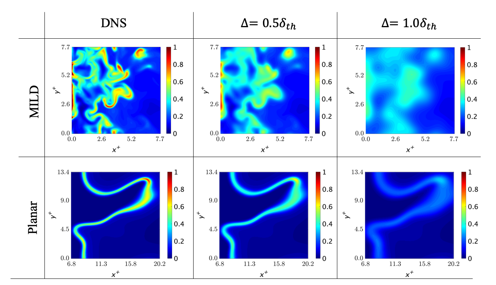

研究の目標
現在、世界的なエネルギー需要の高まりにから、より環境に配慮した高効率かつ程環境負荷な燃焼器が求められている。 それを実現する新たな技術としてModerate or Intense Low-oxigen Dilution(MILD)燃焼が注目されている。 これは高効率かつ安定した燃焼を実現し、また放出される窒素酸化物の量も従来の燃焼と比べて大幅に削減できる。
下図は通常の燃焼形態であるPlanar火炎（平面乱流火炎）とMILD燃焼の反応速度の分布を示している。 MILD燃焼は一般的な火炎形態である伝搬火炎に加え、自着火領域と干渉火炎が複雑に組み合わさっている。 そのため、反応領域はより広く分布し、複雑に入り組んでいることが見てとれる。
この複雑な燃焼形態を用いた燃焼器の開発には数値熱流体解析が有効であり、その手法としてLarge Eddy Simulationが有効である。 しかし、MILD燃焼において十分な制度を有したモデルは存在していない。 そのため、このモデルの開発のため、MILD燃焼場の解明が必要であった。
成果
解析には主成分分析を用いた。主成分分析とは、解析するデータの特徴と各変数の寄与を数学的に顕在化できるデータ解析手法である。 解析には3種類のMILD燃焼(A1,A2,B1)と1種類のPlanar火炎(C)に異なるフィルターサイズのガウシアンフィルターをかけたデータを用いた。 8つのことなる物理量について、その現象への寄与を計算した結果、以下の物理量においてそれぞれの燃焼形態に特異的な結果が得られた。
これら二つのグラフは流体の剛体回転の現象への寄与をフィルターサイズに対して示している。 左側の第一主成分では共に単調増加しているが、第二主成分ではPlanar火炎のみ単調現象している。 このことから流体の剛体回転において二つの燃焼形態に優位に差が現れることがわかった。
そこで剛体回転運動の反応速度への直接的な影響をみるために関連物理量の相関について検討した。
左の図はスカラー散逸率と化学反応速度、右は剛体回転運動と化学反応速度のスピアマンの相関係数を示している。 ここで、過去の研究から燃焼現象において化学反応速度とスカラー散逸率には強い相関があることが知られている。
左の図からは平面乱流火炎ではこの二つの間に非常に強い相関が見られる一方で、MILD燃焼では、比較的強い相関を示すものの、平面乱流火炎と比べその相関は小さくなっている。 したがって、スカラー散逸率以外に化学反応速度を支配する物理量があると考えられる。
右の図に示されている、剛体回転運動と化学反応速度の相関係数では、平面乱流火炎では負の相関をとり単調減少してる一方で、MILD燃焼では比較的大きな正の相関を示している。そしてその相関係数はフィルターサイズと共に上昇している。 したがって、MILD燃焼では剛体回転運動と化学反応速度の間に直接的な関係があることが示唆される。
流体の剛体回転運動の内外では物質や熱の移動が抑制されます。MILD燃焼の特徴である自着火現象と、その自着火遅れ時間は温度と物質の損失に依存するため、この輸送の抑制により自着火現象が促進されていると考えられます。また、回転の外部では、回転によって火炎干渉が発生し、火炎の化学反応を助長していると考えられます。